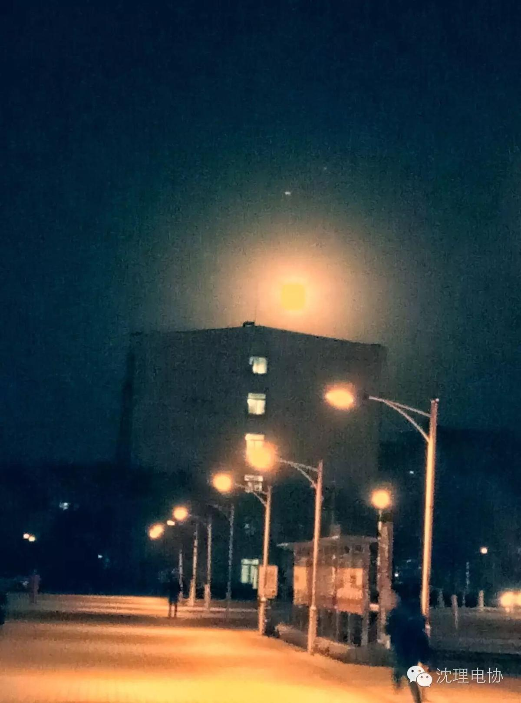
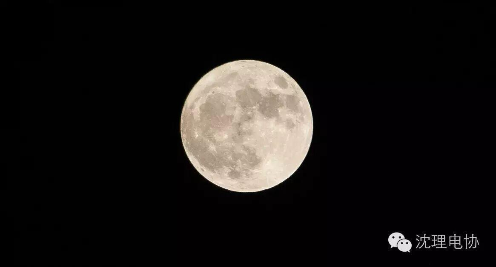

超级大月亮之夜

冷风中的小编拿着廉价的设备去拍美丽大方的supermoon。深深地表达了小编对大月亮的深情~~

另外还有电协喵学长的135焦段拍出来的大月亮！

虽然难忘今天的超级大月亮，其实真的挺美的，只可惜手机像素表达不出她美丽的身影。让我们2034年在聚吧！！

下面给大家呈上刚出炉的也是近期大家比较关注的比赛规则:
竞赛规则（一）竞赛规则1.比赛时间为2分30秒； 2.每支参赛队有1机器人； 3.比赛前有20秒的准备时间； 4.裁判吹哨示意开始比赛后，机器人在30秒内启动并离开出发区； 5.机器人必须从出发区出发； 6.机器人离开出发区后只有一次重启机会，再申请需要扣分； 7．若一方申请停止比赛，则需得到对方同意。 8.若有一支以上的队伍完成比赛所有要求，则得分多者获胜，其次用时短者获胜。 注：若有改动请以《参赛手册》为准 |
还有对参赛机器人的一些要求：
关于机器人每支参赛队必须自己设计和制作机器人参与比赛。每场比赛中，每支参赛队只允许有一台手动机器人。 1.机器人 ⑴ 整个比赛过程中，机器人的尺寸不得超过400mm长×400mm宽×400mm高。 ⑵ 机器人在比赛中不允许分离。 2.机器人操作 (1)每支参赛队只允许有1名队员操作机器人。 (2)自动机器人启动后，参赛队员不得接触机器人。 (3)出发前，机器人任何部分不能伸出出发区。 3.重新启动 重启按下列规定执行，一旦重启，重启的队得分清零。 (1)机器人可以随时申请重启。经裁判允许后，参赛队员要将手动机器人搬回出发区重新启动，所有得分归零； 4.能源 ⑴ 机器人提供动力的电源不得超过DC12v；灭火装置的电源不得超多DC24V； ⑵ 如果用压缩空气，气压不得超过0.8MPa； ⑶ 不得使用竞赛委员会认为危险或不适当的能源； 5.重量 机器人，包括电源、电缆、控制盒和机器人的其它零件在赛前必须称重。每支参赛队所有机器人的总重量不得超过10kg。 |
最后希望参赛的老司机们借此机会获得不错的成绩和宝贵的比赛经验！！ 港巴碟~_~ @_@ *_* ^_^
信息部/卞晨阳